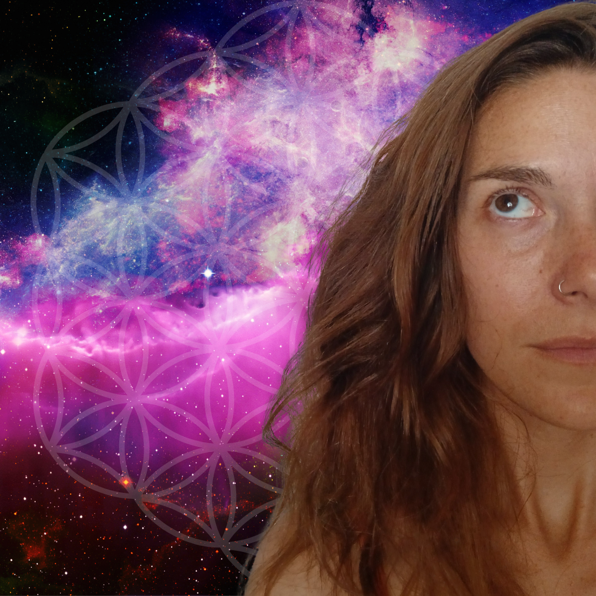

Je vous accompagne sur votre chemin d’éveil, de reconnexion et d’alignement.
Des espaces sacrés pour se retrouver, se réaligner et se reconnecter à sa véritable essence.
Je propose des soins vibratoires pour replacer les corps subtils à leur fréquence, réparer les auras, harmoniser les chakras et retrouver un équilibre global.
Des guidances spirituelles personnalisées pour éclairer votre chemin avec clarté, douceur et intuition.
Email : camille.eulalie.accompagnements@gmail.com
Téléphone : 0690 96 70 42